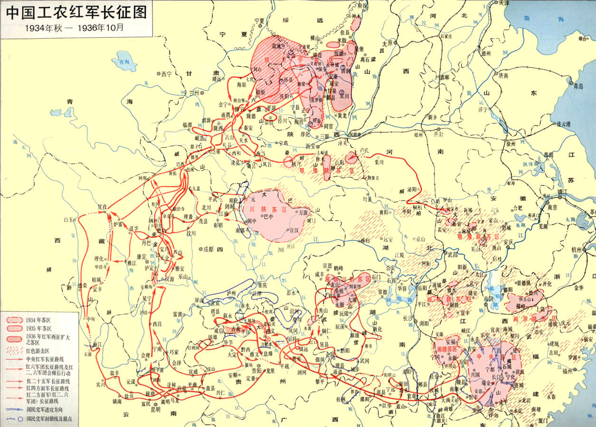

90年前的那个秋夜，平均年龄不到20岁的红军战士背上草鞋，踏上未知的漫漫征途。
今天，同样正值青春的我们，站在时代的交汇点上回望。他们的长征已经胜利，而属于我们这代人的“突围”与“长征”，又将从哪里启程？

1

1934年10月，第五次反“围剿”失败。中央红军主力8.6万人趁着夜色跨过于都河，被迫实行战略转移。没有欢送，只有夜色与秋风，这是一场向着未知的悲壮远征，却意外成为了中国命运的伟大转折。
90年前的那个秋夜，平均年龄不到20岁的红军战士背上草鞋，踏上未知的漫漫征途。
今天，同样正值青春的我们，站在时代的交汇点上回望。他们的长征已经胜利，而属于我们这代人的“突围”与“长征”，又将从哪里启程？
一场 3 万人对抗 40 万人的绝地反击。在川黔滇交界的崇山峻岭中，红军以高度的机动性，穿插迂回，硬生生在敌人的铜墙铁壁中撕开了一条生路。
装备简陋，刚经历湘江战役惨重损失，急需修整。
多路合围，蒋介石坐镇贵阳督战，企图毕其功于一役。
1935年1月，土城战役中，面对兵力与装备的悬殊差距以及源源不断的敌军后援，毛主席当机立断暂缓北渡长江计划。红军主力挥师向西，一渡赤水，成功拿下云南扎西地区，暂避敌方锋芒。
1935年2月18日，红军突然从扎西掉头东进，二渡赤水。这记漂亮的“回马枪”打得贵州军阀措手不及，短短5天接连攻克桐梓、娄山关与遵义，以极小代价取得长征以来的首次大胜！
1935年3月10日，面对30多万大军围剿，红军凭借破译的敌军密电，避开重兵防御的打鼓新场。随后大张旗鼓向西三渡赤水，以一个团佯装主力诱敌向川南，真正的主力则隐蔽在赤水河畔的深山中伺机而动。
1935年3月21日，红军主力第四次东渡赤水。部队佯攻遵义，实则南下直逼贵阳，吓得亲自督战的蒋介石急调云南守军救援。红军趁机虚晃一枪，直插兵力空虚的云南，成功渡过金沙江，彻底跳出40万大军的包围圈！
长征是独一无二的，长征是无与伦比的。而四渡赤水又是“长征史上最光彩神奇的篇章”。
哈里森·索尔兹伯里《长征——前所未闻的故事》
“金沙水拍云崖暖”。金沙江，两侧悬崖峭壁，江水波涛汹涌，是阻挡红军北上的天然绝境。前有天险，后有几十万追兵，红军在这里上演了一场堪称奇迹的“生死大渡河”，从此彻底跳出了敌人的包围圈，掌握了长征的战略主动权。
调虎离山
红军摆出攻打昆明的架势，惊得云南军阀龙云急调各地守军回防。这一招“调虎离山”，瞬间让金沙江沿岸兵力空虚，为渡江撕开了防线的缺口。
抢占渡口
趁敌人主力回防，红军主力突然掉转锋芒，以每天百余里的极限急行军直扑金沙江。先遣队化装成国军，兵不血刃控制皎平渡，并找到了极为珍贵的6只木船。
七天七夜
江水急浪高无法架桥。在江岸熊熊篝火照明下，37位老船工歇人不歇船，历经七天七夜的极限奋战，将三万多名红军战士奇迹般地全部送过对岸。
绝尘而去
当十几万追兵气喘吁吁赶到江边时，江面上空空如也，只剩下红军丢弃的破草鞋。隔着汹涌的金沙江，敌军只能望江兴叹，红军自此彻底跳出包围圈！
“大渡桥横铁索寒”。大渡河，水流湍急如雷，两岸是犹如刀削的悬崖峭壁。前有难以逾越的天险，后有薛岳几十万大军的疯狂追击。红军在这里，不仅要和全副武装的敌人抢时间，更要和人类的生理极限掰手腕。退一步，就是万丈深渊；前进一步，是枪林弹雨。
为了抢在敌军增援前拿下桥头，红四团在倾盆大雨与极度饥饿中，一昼夜狂奔120公里。没有火把，就摸黑前进；甚至与对岸的敌军隔河并行。这不仅是急行军，更是超越人类生理极限的奇迹。
长百余米、由13根铁索组成的吊桥，大部分木板已被敌人抽飞。脚下是震耳欲聋、卷起数米高浪花的汹涌江水，连站稳都成奢望。
对岸的桥头堡里，敌人的机枪正吐着火舌，交织成密集的火力网，企图将红军彻底阻挡在冰冷的大渡河畔。
22名勇士将驳壳枪插在腰间，背着马刀和手榴弹，手攀铁索，脚踩铁环，迎着弹雨以血肉之躯一步步蹚开了一条生路！
甩开了敌兵的重重围堵，红军却迎来了长征途中最残酷的“自然之敌”。皑皑雪山，飞鸟绝迹；茫茫草地，暗藏杀机。在这里，夺走战士生命的不再是枪林弹雨，而是极寒、缺氧与饥饿。这是一场没有硝烟的战争，是凭借纯粹的信仰与钢铁意志，一步步生生蹚出来的生存奇迹。
海拔四千多米的夹金山，终年积雪，空气稀薄。绝大多数南方籍的红军战士，身上只有单薄的秋衣和磨破的草鞋，迎着零下二三十度的狂风暴雪艰难跋涉。在这里，没有震耳欲聋的枪炮声，只有令人窒息的寂静与极寒。高海拔缺氧让人头痛欲裂，一旦有人因体力不支坐下喘息，寒气便会瞬间冻僵血液，化作雪山上永远的路标。这不仅是一次行军，更是一场凭借纯粹信仰与残酷自然展开的殊死搏斗。
面对海拔 4000 多米、气温零下二三十度的夹金山，绝大多数南方籍红军战士身上只有单薄的秋衣和破烂的草鞋，连御寒的辣椒都成了奢侈的救命药。
高海拔缺氧让人头痛欲裂、呼吸困难。在冰雪中，一旦有人因体力不支坐下休息，极寒瞬间就会冻僵血液，再也无法站起，化作雪山上永远的路标。
广袤的松潘草地看似平静，实则遍布着致命的黑水与淤泥。在这片方圆数百里连一棵树都找不到的荒野中，红军迎来了比雪山更令人绝望的考验——断粮与泥沼。干粮耗尽后，挖野草、吃树皮，甚至将随身的皮带和马鞍用水煮软切碎吞下，只为能再往前迈出一步。狂风暴雨的寒夜里，找不到一块干燥的平地，战士们只能背靠背坐在冰冷的泥水中取暖。无数年轻的生命没有倒在敌人的枪口下，却永远沉睡在了这片苍茫的野草之中。
广袤的松潘草地看似平静，实则遍布致命的黑水淤泥。一旦踩破草皮陷进去，越挣扎陷得越深，战友们只能眼睁睁看着彼此被无情的泥沼吞没。
茫茫草地荒无人烟，干粮耗尽后，红军只能靠挖野菜、吃草根维生。当野菜也被挖光，战士们甚至将皮带、马鞍用水煮软后切碎吞下，只为能再往前走一步。
广袤的沼泽中找不到一块干燥的宿营地。狂风暴雨的夜晚，战士们只能背靠背坐在冰冷的泥水里，用彼此的体温扛过漫漫长夜。
1936年10月，历经两年多辗转大半个中国的九死一生，红一、红二、红四方面军终于在甘肃会宁和宁夏将台堡胜利会师。当衣衫褴褛却目光如炬的战友们紧紧相拥、喜极而泣时，这段跨越14个省、长达两万五千里的史诗远征，终于画上了震撼世界的句号。长征结束了，但长征精神的火种，才刚刚燎原。
会宁城头，红旗漫卷。当不同番号的部队相见时，许多人甚至连名字都叫不出，只是死死抱在一起痛哭。他们有的失去了双腿，有的满身伤痕，但每个人身上都闪耀着一种不可战胜的光芒。
虽历经惨烈的减员，但在会师的这一刻，三支钢铁洪流汇聚成了一股无坚不摧的力量。中国共产党和红军在这场残酷的淘汰赛中浴火重生，锻造出了一支千锤百炼的核心队伍。
击退百万穷追猛打的敌军，翻越18座连绵起伏的雪山，渡过24条汹涌澎湃的河流……这个不可思议的数字，从此成为了人类挑战自身极限、追求崇高理想的永恒代名词。
时空流转，青春的考卷已交到我们手中。 没有硝烟，却有同样需要跨越的‘雪山’与‘草地’。我们的长征，正写在祖国的大地上，写在每一个不甘平庸的选择里。
点击卡片，听听新时代青年的回声